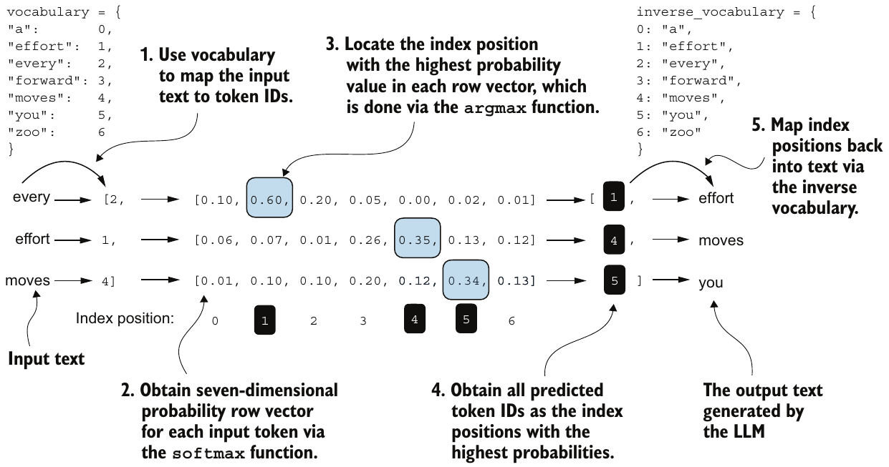
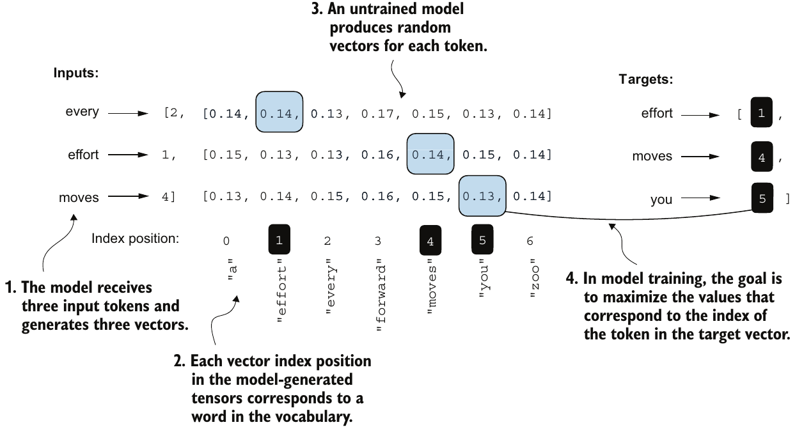
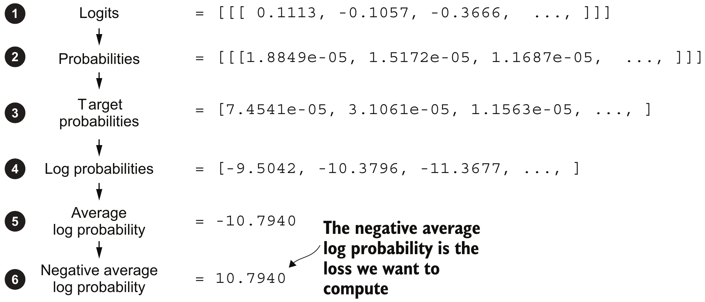
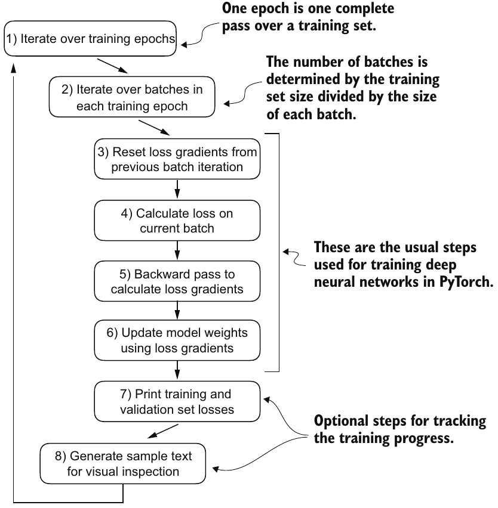
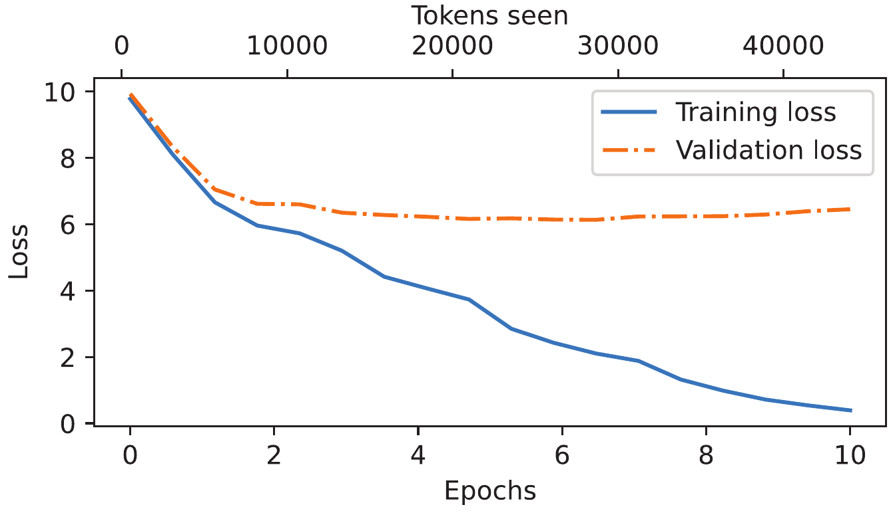

Outline
GPT가 입력 위치마다 내는 어휘별 점수 logits와 정답 다음 토큰 사이의 거리를 손실로 측정하고, 손실을 줄이는 학습의 결과까지 판정하는 과정
| 선행 지식 | 선행 지식만으로 남는 문제 | 새로 배울 내용과 역할 |
|---|---|---|
| logits → softmax → argmax로 다음 토큰 선택 | 예측과 정답 사이의 거리를 수 하나로 표현 불가 | 교차엔트로피 손실: 정답 토큰에 준 확률로 거리 측정 |
| 어휘 전체에 대한 softmax 확률(합 1) | 손실 값만으로는 크고 작음의 판단 기준 부재 | perplexity: 손실을 “헷갈리는 후보 수”로 바꾼 값 |
| 한 칸 이동한 입력–정답(input–target) 쌍, DataLoader | 두 문장의 손실만으로는 텍스트 전체에서의 성능 판단 불가 | 학습·검증 데이터 분할: 갱신에 쓰지 않는 검증 데이터를 떼어 두고 전체 평균 손실 측정 |
| zero_grad → backward → step 한 번의 갱신 | 갱신 한 번만으로는 모델 학습 불충분 | 학습 루프: batch마다 1회 갱신(step)을 epoch 단위로 반복 |
| (없음) | 학습 손실 감소만으로는 처음 보는 텍스트에서의 성능 미확인 | 과적합 판정: 학습 손실만 줄고 검증 손실은 줄지 않는 시점을 손실 곡선에서 탐지 |
단편소설 한 편으로 학습하는 GPT 예제
손실 계산부터 과적합 판정까지 모든 장표가 공유하는 예제: 단편소설 한 편으로 처음부터 학습하는 작은 GPT
| 항목 | 내용 |
|---|---|
| 입력 | 미국 소설가 Edith Wharton의 단편 “The Verdict”(저작권 만료) 20,479자 = GPT-2 tokenizer 기준 5,145토큰 |
| 모델 | 교재 GPTModel, 설정 GPT_CONFIG_124M |
| 처리 | 손실 정의 → 학습·검증 분할 → 10 epoch 학습 |
| 예제 결과 | 학습·검증 손실 기록표, 손실 곡선, 학습 중단 시점과 근거 |
| 실제 규모 | 교재 비교 사례 Llama 2 7B 사전학습: 2조 토큰, A100 GPU 184,320시간 |
import torch, tiktoken
from previous_chapters import GPTModel, create_dataloader_v1
tokenizer = tiktoken.get_encoding("gpt2")
GPT_CONFIG_124M = {
"vocab_size": 50257, # 어휘 수 V
"context_length": 256, # 최대 토큰 수
"emb_dim": 768, # 특징 수 D
"n_heads": 12, # head 수
"n_layers": 12, # block 수
"drop_rate": 0.1, # dropout 비율
"qkv_bias": False, # Q·K·V bias 없음
}previous_chapters.py: 교재 2·4장 코드 파일(GPTModel= GPT 구조,create_dataloader_v1= 원문 → batch)- 124M: GPT-2의 가장 작은 모델 이름, 교재 구현은 출력층 행렬을 따로 두어 파라미터 162,419,712개
- 문맥 길이: 계산량 감소를 위해 GPT-2의 1,024에서 256으로 축소
위치별 다음 토큰 예측의 읽기 순서
입력 토큰마다 어휘 전체의 확률을 구하고, 가장 큰 확률의 위치를 다음 토큰 ID로 읽는 절차

교재 Figure 5.4: 어휘 7개짜리 설명용 예, 확률 행의 열 번호 0~6 = 어휘 ID, 확률은 설명용 표시값(첫 행 합 0.98)
그림 읽기(왼쪽 → 오른쪽)
- ① 텍스트 → ID [2,1,4] ② 위치별 softmax 확률 7개 ③ 행별 최댓값(파란 칸 0.60, 0.35, 0.34)의 위치를 argmax로 탐색 ④ 예측 ID [1,4,5] ⑤ 텍스트 “effort moves you”로 복원
- 행 하나 = 입력 위치 하나: “moves” 행은 “every effort moves” 다음 토큰의 예측
- causal attention 때문에 각 행이 참조하는 범위: 자기 위치까지의 토큰
정답(target)
- 입력을 한 칸 민 ID [1,4,5]
- Figure 5.4의 세 예측: 모두 정답과 일치
학습 전 GPT의 위치별 예측
같은 절차를 무작위 초기 파라미터의 GPT에 적용: 두 문장을 batch로 묶은 입력 ID [2,3](문장 2개 × 위치 3개) → 확률 [2,3,50257]
torch.manual_seed(123)
model = GPTModel(GPT_CONFIG_124M)
model.eval()
inputs = torch.tensor([[16833, 3626, 6100], # every effort moves
[40, 1107, 588]]) # I really like
targets = torch.tensor([[3626, 6100, 345], # effort moves you
[1107, 588, 11311]]) # really like chocolate
with torch.no_grad():
logits = model(inputs)
probas = torch.softmax(logits, dim=-1)
token_ids = torch.argmax(probas, dim=-1, keepdim=True)probas.shape → torch.Size([2, 3, 50257])
tokenizer.decode(token_ids[0, :, 0].tolist())
→ " Armed heNetflix"
tokenizer.decode(targets[0].tolist())
→ " effort moves you"| 코드 | 역할 |
|---|---|
manual_seed(123) | 무작위 초기 파라미터 고정 |
model.eval() | dropout을 끈 평가 상태 |
torch.no_grad() | 블록 안 기울기용 기록 중단(출력 동일) |
probas | softmax 확률, 축 = 문장 2·위치 3·어휘 50,257 |
dim=-1 | 마지막 축(어휘) 방향 적용 |
keepdim=True | 줄어든 축을 길이 1로 유지 → [2,3,1] |
- 예측 “ Armed”, “ he”, “Netflix”: 정답과 모두 불일치, 위치별 최대 확률 0.00024 미만
정답 확률에서 교차엔트로피 손실로
각 행에서 정답 ID 열의 확률을 높이는 학습의 진행 정도를 재는 교차엔트로피(cross entropy) 손실

교재 Figure 5.6: 학습 전 모델의 위치별 확률 7개
- 파란 칸: 최댓값이 아니라 오른쪽 Targets가 정한 정답 ID 열, 모두 1/7≈0.14 근처
- 확률의 합 = 1: 정답 열이 커진 만큼 나머지 열의 합 감소
- 학습 전 손실 1.9908: 7개 후보 균등 확률의 손실 log 7 ≈ 1.9459보다 약간 큼
| 단계 | Figure 5.6 (학습 전) | Figure 5.4 |
|---|---|---|
| 정답 확률 | 0.14, 0.14, 0.13 | 0.60, 0.35, 0.34 |
| log | −1.9661, −1.9661, −2.0402 | −0.5108, −1.0498, −1.0788 |
| 평균(N=3) | −1.9908 | −0.8798 |
| 부호 반전 = 손실 | 1.9908 | 0.8798 |
- 기호: N = 정답 위치 수, pi = i번째 위치의 정답 토큰 확률, log = 자연로그
- −log: 낮은 정답 확률일수록 큰 벌점(확률 0.9 → 0.1054, 0.01 → 4.6052)
- 평균: N이 달라도 같은 척도 유지
- 부호 반전: 0 이상이며 작을수록 좋은 값
argmax 일치율과 손실의 차이
argmax 일치율: 예측 ID가 정답 ID와 같은 위치의 비율, 최댓값 위치만 보므로 최댓값이 바뀌기 전까지 정답 확률이 변해도 불변
| 상태 | 정답 확률 | argmax 일치율 | 손실 |
|---|---|---|---|
| A: Figure 5.6 | [0.14, 0.14, 0.13] | 0 / 3 | 1.9908 |
| B: A의 첫 위치만 0.14 → 0.16 (다른 열에서 0.02 감소, 최댓값 0.17은 유지) | [0.16, 0.14, 0.13] | 0 / 3 | 1.9463 |
| C: Figure 5.4 | [0.60, 0.35, 0.34] | 3 / 3 | 0.8798 |
| D: 세 위치 모두 0.9 | [0.90, 0.90, 0.90] | 3 / 3 | 0.1054 |
- A → B: 정답 확률이 오른 개선인데 일치율은 0/3 그대로, 손실만 1.9908 → 1.9463으로 감소
- C ↔ D: 일치율은 같지만 정답을 더 확신하는 D의 손실이 더 작음
학습에 손실을 쓰는 이유
- 손실: 정답 확률의 작은 변화에도 연속적으로 변해 파라미터별 기울기 계산 가능
- 일치율: 최댓값이 바뀔 때만 계단처럼 변해 최댓값 위치가 그대로인 구간의 기울기는 0
GPT 출력의 정답 확률과 손실 계산
학습 전 GPT의 확률 probas [2,3,50257]에서 위치마다 정답 토큰 확률 1개씩, 총 6개를 골라 log → 평균 → 부호 반전
# probas[문장, 위치, 어휘 ID] = 그 위치에서 그 토큰의 확률
target_probas = torch.tensor([
probas[0, 0, 3626], probas[0, 1, 6100], probas[0, 2, 345],
probas[1, 0, 1107], probas[1, 1, 588], probas[1, 2, 11311]])
log_probas = torch.log(target_probas)
avg_log_probas = torch.mean(log_probas)
neg_avg_log_probas = avg_log_probas * -1target_probas → [7.4540e-05, 3.1061e-05, 1.1563e-05,
1.0337e-05, 5.6776e-05, 4.7559e-06]
log_probas → [ -9.5042, -10.3796, -11.3677,
-11.4798, -9.7764, -12.2561]
avg_log_probas → -10.7940, neg_avg_log_probas → 10.7940
교재 Figure 5.7: 같은 계산의 ①~⑥ 단계(위→아래), ③ = target_probas
- 세 칸 번호: 문장·위치·정답 ID(
targets의 같은 칸 값, 예: 3626 = “ effort”) - 6개: 문장 2 × 위치 3, 모두 균등 확률 1/50,257 ≈ 1.99e−05 수준
- ④~⑥: 7개 어휘 예와 같은 계산(N = 6)
cross_entropy 함수의 입력 형태
torch.nn.functional.cross_entropy: logits를 받아 softmax → 정답 확률 선택 → log → 평균 → 부호 반전을 한 번에 계산, 입력 = 행 하나가 예측 하나인 logits [N, V]와 정답 ID [N]
# [2,3,50257] → [6,50257]
logits_flat = logits.flatten(0, 1)
# [2,3] → [6]
targets_flat = targets.flatten()
loss = torch.nn.functional.cross_entropy(
logits_flat, targets_flat)loss → tensor(10.7940)- N: 예측 위치 수 = 문장 2 × 위치 3 = 6, V: 어휘 수 50,257
- flatten(0, 1): 0번 축(문장)과 1번 축(위치)을 한 축으로 합침, 마지막 축(어휘 50,257)은 유지
- targets.flatten(): 정답 ID [2,3]을 같은 순서로 한 줄로 펼침
펼친 순서: 문장 0의 위치 0·1·2 → 문장 1의 위치 0·1·2
| 펼친 행 | 원래 칸 [문장, 위치] | 이 행이 본 입력 | 정답 ID (토큰) |
|---|---|---|---|
| 0 | [0, 0] | every | 3626 (“ effort”) |
| 1 | [0, 1] | every effort | 6100 (“ moves”) |
| 2 | [0, 2] | every effort moves | 345 (“ you”) |
| 3 | [1, 0] | I | 1107 (“ really”) |
| 4 | [1, 1] | I really | 588 (“ like”) |
| 5 | [1, 2] | I really like | 11311 (“ chocolate”) |
cross_entropy 입력 형태별 결과
같은 두 문장의 logits·정답으로 입력 형태만 바꾼 세 시도: 실행 오류, 정상 값, 실행은 되지만 의미가 틀린 값의 구분
| 시도 | 넣은 값 | 결과 |
|---|---|---|
| 1. 그대로 넣기 | logits [2,3,50257], targets [2,3] | RuntimeError: Expected target size [2, 50257], got [2, 3] |
| 2. 펼친 logits | logits_flat [6,50257], targets_flat [6] | 10.7940 (앞 장 손계산과 같은 값) |
| 3. 확률을 넣기 | probas.flatten(0, 1) [6,50257], targets_flat [6] | 10.8249: 정상 값보다 큰 다른 값 |
시도 1의 원인
- 3차원 입력의 둘째 축(dim 1)을 후보 축으로 읽는 함수 규칙
- 위치 축(길이 3)을 후보 축으로 오해해 정답 shape [2, 50257]을 기대
시도 3의 원인
- 함수 안에서 softmax를 한 번 더 적용, 0.0003 미만의 확률들은 다시 softmax하면 거의 균등(모두 ≈ 1/50,257)
- 정답 확률 ≈ 1/50,257 → 손실 ≈ −log(1/50,257) = log 50,257 ≈ 10.8249
perplexity의 필요성과 정의
손실 L을 “평균적으로 후보 몇 개 중 하나를 고르는 만큼 헷갈리는가”라는 후보 수로 바꾼 값 perplexity = eL
문제
- 학습 전 GPT의 손실 10.7940: 이 값만으로는 큰지 작은지 판단 기준 부재
- 손실 = 정답 확률의 log 평균: 셀 수 있는 양이 아닌 log 척도
정의
| 기호 | 뜻 |
|---|---|
| \(L\) | 교차엔트로피 손실(log = 자연로그) |
| \(N\), \(p_i\) | 정답 위치 수, i번째 위치의 정답 토큰 확률 |
| \(e\) | 자연로그의 밑 2.71828…, \(e^{L}\) = log를 되돌리는 계산 |
정답 확률로 다시 쓴 식
- 기하평균: N개 확률의 곱의 N제곱근, 곱으로 계산한 평균
- 후보 수 해석: 정답 확률의 기하평균이 1/K이면 perplexity K, 매 위치에서 후보 K개 중 하나를 균등하게 고르는 것과 같은 헷갈림
- 좋고 나쁨: 작을수록 좋음, 최솟값 1(모든 정답 확률 1)
perplexity의 단계별 계산
어휘 7개 모델이 세 위치에서 정답 토큰에 준 확률 [0.5, 0.25, 0.125]로 손실 L과 perplexity를 차례로 계산
| 단계 | 계산 | 값 |
|---|---|---|
| ① 정답 확률 \(p_i\) | 위치 1·2·3 | 0.5, 0.25, 0.125 |
| ② \(\log p_i\) | 자연로그 | −0.6931, −1.3863, −2.0794 |
| ③ 평균 | 합 −4.1589 ÷ 3 | −1.3863 |
| ④ 손실 L | 부호 반전 | 1.3863 |
| ⑤ perplexity | \(e^{1.3863}\) | 4 |
| ⑥ 검산 | 기하평균 \(\sqrt[3]{0.5\times0.25\times0.125}\) | 0.25 → 역수 4 |
p = torch.tensor([0.5, 0.25, 0.125])
L = -torch.log(p).mean()
torch.exp(L)L → tensor(1.3863)
torch.exp(L) → tensor(4.)- 해석: 위치별 정답 확률은 1/2·1/4·1/8로 달라도, 평균적으로는 매 위치에서 후보 4개 중 하나를 균등하게 고르는 수준의 헷갈림
- 같은 perplexity: 세 위치 모두 정답 확률 1/4인 모델도 L = log 4 = 1.3863, perplexity 4
- 어휘 7개 기준: 7개 후보 모두에 1/7을 주는 균등 추측(perplexity 7)보다 덜 헷갈리는 모델
균등 추측 기준값과 perplexity의 판정
모든 후보에 1/V를 주는 균등 추측의 손실 log V·perplexity V를 기준값으로 두고 같은 어휘의 모델끼리 비교
어휘 7개(V = 7)의 예
| 모델 | 정답 확률 | 손실 L | perplexity |
|---|---|---|---|
| 완벽한 예측 | 1, 1, 1 | 0 | 1 |
| Figure 5.4 | 0.60, 0.35, 0.34 | 0.8798 | 2.41 |
| 앞 장 예 | 0.5, 0.25, 0.125 | 1.3863 | 4 |
| 균등 추측 | 1/7, 1/7, 1/7 | 1.9459 | 7 |
| Figure 5.6 학습 전 | 0.14, 0.14, 0.13 | 1.9908 | 7.32 |
GPT(V = 50,257)의 적용
torch.exp(loss) → tensor(48725.8203) # 8장 cross_entropy 손실| 모델 | 손실 L | perplexity |
|---|---|---|
| 균등 추측 | 10.8249 | 50,257 |
| 학습 전 GPT | 10.7940 | 48,725.8 |
- 학습 전 GPT(두 문장 정답 6개): 후보 약 48,726개 사이에서 헷갈리는 수준 ≈ 균등 추측
- V보다 큰 perplexity: 균등 추측보다 나쁜 모델(Figure 5.6의 7.32 > 7)
- 비교 조건: 어휘(tokenizer)가 같은 모델끼리만 비교, 어휘 수가 다르면 기준값 V가 달라 직접 비교 불가
학습 데이터와 검증 데이터의 분할
소설을 학습 데이터(training set)와 검증 데이터(validation set)로 나눠 갱신에 쓰지 않은 텍스트의 손실도 측정
with open("the-verdict.txt", "r", encoding="utf-8") as file:
text_data = file.read()
train_ratio = 0.90
split_idx = int(train_ratio * len(text_data))
train_data = text_data[:split_idx]
val_data = text_data[split_idx:]| 구분 | 문자 수 | 토큰 수 | batch 수 | 역할 |
|---|---|---|---|---|
| text_data | 20,479 | 5,145 | — | 전체 원문 |
| train_data | 18,431 | 4,612 | 9 | 파라미터 갱신 |
| val_data | 2,048 | 534 | 1 | 손실만 계산 |
- batch(
create_dataloader_v1): 겹치지 않는 길이 256 창(정답 = 한 칸 민 창) 2개, [2, 256] - train_loader: batch 9개, epoch마다 순서 섞음 / val_loader: batch 1개
문제
- 두 문장의 손실: 모델 전체 성능의 대표값으로 부족
- 학습 데이터의 손실만으로는 일반적인 패턴 학습과 텍스트 암기의 구분 불가
해결
- 소설의 마지막 10%를 떼어 파라미터 갱신에서 제외
- 검증 데이터의 손실: 처음 보는 텍스트에 대한 성능의 추정값
경계 확인
- 문자 위치 18,431에서 잘라 단어가 갈림: 학습 쪽 끝 “…my 'techniq”, 검증 쪽 시작 “ue' collapsed…”
- 두 부분을 따로 토큰화해 토큰 수 합 5,146, 전체보다 1 많음
손실 평가의 모델 상태와 평가 함수
평가 조건(파라미터 불변, 같은 입력에 같은 손실)을 같은 검증 batch의 두 모델 상태 × 두 번 계산으로 확인
| 모델 상태 | 1회 | 2회 |
|---|---|---|
model.train() | 10.9780 | 10.9656 |
model.eval() | 10.9811 | 10.9811 |
- 문제: 학습 상태의 dropout이 매번 다른 값을 무작위로 지워 같은 파라미터·데이터에서도 손실 변동(위 값은 한 번의 관찰값)
- 영향: 갱신 전후의 손실 차이에 dropout의 흔들림이 섞임
| 설정 | dropout | 기울기용 기록 |
|---|---|---|
model.train() | 켬 | 남김 |
model.eval() | 끔 | 영향 없음 |
torch.no_grad() | 영향 없음 | 끔(손실값 동일) |
device: 계산 장치, 이 실행은 CPU
def evaluate_model(model, train_loader, val_loader,
device, eval_iter):
model.eval()
with torch.no_grad():
train_loss = calc_loss_loader(
train_loader, model, device,
num_batches=eval_iter)
val_loss = calc_loss_loader(
val_loader, model, device,
num_batches=eval_iter)
model.train()
return train_loss, val_loss- 해결(
evaluate_model): 평가 상태로 측정 후 복귀 - 복귀 생략 시: 이후 갱신도 dropout 없이 진행
calc_loss_loader: 앞 num_batches개 batch 손실의 평균(교재 함수)
학습 루프의 반복 단계
단계 전환: 고정된 파라미터의 손실 평가 → 학습 손실을 줄이도록 파라미터를 반복 갱신하는 학습

- 그림 읽기(교재 Figure 5.11): 위→아래 진행, 왼쪽 긴 화살표 = 다음 epoch
- step: batch 1개로 1회 갱신, epoch: 학습 batch 전체 1회 순회
| 단계 | 코드 | 이 실행의 값·역할 |
|---|---|---|
| 1–2 | for epoch… / for batch… | epoch당 9 batch = 9 step, 10 epoch = 90 step |
| 3 | optimizer.zero_grad() | 이전 batch 기울기 제거 |
| 4 | calc_loss_batch(...) | batch 1개의 cross_entropy 평균 손실(정답 512개) |
| 5–6 | loss.backward(); optimizer.step() | 기울기 계산 → 파라미터 갱신(그림 라벨 model weights) |
| 7 | evaluate_model(...) | 5회 갱신마다 기록 |
- 8단계 텍스트 생성: 눈으로 보는 선택 단계(이 덱 코드에서 생략)
.grad에 이전 batch들의 기울기가 계속 누적된 값으로 갱신학습 함수의 기록 구조
갱신을 반복하며 eval_freq번째 갱신마다 두 손실과 누적 토큰 수를 기록하는 train_model_simple
def train_model_simple(model, train_loader, val_loader, optimizer,
device, num_epochs, eval_freq, eval_iter):
train_losses, val_losses, track_tokens_seen = [], [], []
tokens_seen, global_step = 0, -1
for epoch in range(num_epochs):
model.train()
for input_batch, target_batch in train_loader:
optimizer.zero_grad()
loss = calc_loss_batch(input_batch, target_batch, model, device)
loss.backward()
optimizer.step()
tokens_seen += input_batch.numel()
global_step += 1
if global_step % eval_freq == 0:
train_loss, val_loss = evaluate_model(
model, train_loader, val_loader, device, eval_iter)
train_losses.append(train_loss)
val_losses.append(val_loss)
track_tokens_seen.append(tokens_seen)
print(f"Ep {epoch+1} (Step {global_step:06d}): "
f"Train loss {train_loss:.3f}, Val loss {val_loss:.3f}")
return train_losses, val_losses, track_tokens_seen- global_step: −1에서 시작, Step 0 기록 = 첫 갱신 직후 값
- tokens_seen:
numel()(원소 수)로 batch마다 2×256=512씩 증가, Step 85에서 44,032 - eval_freq=5: Step 0, 5, …, 85의 18번 기록
- eval_iter=5: 학습 손실은 섞인 9 batch 중 앞 5개, 검증 손실은 1 batch 전체
- 출력 라벨: Train loss = 학습 손실, Val loss = 검증 손실
- 교재 함수에서 제외: 8단계 생성 호출, 인자
start_context·tokenizer
train_losses·val_losses·track_tokens_seen: 같은 순서의 18개 기록, 손실 기록표와 손실 곡선의 원본학습 실행과 손실 기록
기울기로 파라미터를 바꾸는 갱신 규칙인 optimizer로 AdamW를 쓴 10 epoch 학습 실행과 손실 기록
device = torch.device("cpu")
torch.manual_seed(123)
model = GPTModel(GPT_CONFIG_124M)
model.to(device)
optimizer = torch.optim.AdamW(
model.parameters(), lr=0.0004, weight_decay=0.1)
num_epochs = 10
train_losses, val_losses, tokens_seen = train_model_simple(
model, train_loader, val_loader, optimizer, device,
num_epochs=num_epochs, eval_freq=5, eval_iter=5)- AdamW: 기울기 이동평균으로 파라미터별 갱신 크기를 조절하는 Adam + 분리된 가중치 감쇠(weight decay, 큰 파라미터 값 축소)
model.parameters(): 갱신 대상,lr: 학습률(1회 갱신 크기)- 실행 조건:
device= CPU, 같은 seed의 새 모델을 처음부터 학습, 241.6초 - Step 0: 첫 갱신 직후 값, 학습 전 10.99에서 감소
Ep 1 (Step 000000): Train loss 9.781, Val loss 9.933
Ep 1 (Step 000005): Train loss 8.111, Val loss 8.339
Ep 2 (Step 000010): Train loss 6.661, Val loss 7.048
Ep 2 (Step 000015): Train loss 5.961, Val loss 6.616
Ep 3 (Step 000020): Train loss 5.726, Val loss 6.600
Ep 3 (Step 000025): Train loss 5.201, Val loss 6.348
Ep 4 (Step 000030): Train loss 4.417, Val loss 6.278
Ep 4 (Step 000035): Train loss 4.069, Val loss 6.226
Ep 5 (Step 000040): Train loss 3.732, Val loss 6.160
Ep 6 (Step 000045): Train loss 2.850, Val loss 6.179
Ep 6 (Step 000050): Train loss 2.427, Val loss 6.141
Ep 7 (Step 000055): Train loss 2.104, Val loss 6.134
Ep 7 (Step 000060): Train loss 1.882, Val loss 6.233
Ep 8 (Step 000065): Train loss 1.320, Val loss 6.238
Ep 8 (Step 000070): Train loss 0.985, Val loss 6.242
Ep 9 (Step 000075): Train loss 0.717, Val loss 6.293
Ep 9 (Step 000080): Train loss 0.541, Val loss 6.393
Ep 10 (Step 000085): Train loss 0.391, Val loss 6.452- 로그 라벨: Train loss = 학습 손실, Val loss = 검증 손실
step과 epoch의 대응
step = batch 하나로 파라미터를 1회 갱신하는 단위, epoch = 학습 batch 전체를 한 번 도는 단위 → 이 예제의 1 epoch = 9 step
1 epoch = 9 step의 이유
- 창 18개: 겹치지 않는 창 18 × 256 = 4,608토큰, 남은 4토큰은 창 길이 미만이라 미사용
- batch 9개: 18 ÷ 2 = 9로 나누어떨어져 버리는 창 없음 / 10 epoch: 9 × 10 = 90 step, 0부터 센 Step 번호 0~89
- 로그의 두 번호:
Ep= 그 step이 속한 epoch(1부터),Step= 0부터 센 누적 갱신 번호
| epoch | 1 | 2 | 3 | 4 | 5 | 6 | 7 | 8 | 9 | 10 |
|---|---|---|---|---|---|---|---|---|---|---|
| Step 범위 | 0~8 | 9~17 | 18~26 | 27~35 | 36~44 | 45~53 | 54~62 | 63~71 | 72~80 | 81~89 |
| 기록 Step | 0, 5 | 10, 15 | 20, 25 | 30, 35 | 40 | 45, 50 | 55, 60 | 65, 70 | 75, 80 | 85 |
- 기록 Step: 5 step마다 손실 기록(eval_freq = 5), epoch 길이 9 step과 달라 epoch마다 기록 1~2개, 합계 18개
손실 곡선과 과적합 판정
과적합(overfitting): 학습 데이터의 손실은 계속 줄지만 검증 데이터의 손실은 줄지 않거나 커지는 상태

교재 Figure 5.12(이 실행의 18개 기록과 같은 값): 파란 실선 Training loss = 학습 손실, 주황 점쇄선 Validation loss = 검증 손실
위 축 Tokens seen = 실제 누적 학습 토큰 수 512~44,032, 아래 축 Epochs = 18개 점을 0~10에 같은 간격으로 놓은 근사 위치(실제 Step 85 = 86회 갱신 ≈ 9.56 epoch)
| 기록 | 학습 손실 | 검증 손실 | 검증 perplexity |
|---|---|---|---|
| 학습 전 | 10.988 | 10.981 | 58,753 |
| Step 0 (epoch 1) | 9.781 | 9.933 | 20,595 |
| Step 55 검증 최저 | 2.104 | 6.134 | 461 |
| Step 85 마지막 | 0.391 | 6.452 | 634 |
- 정상 학습: 두 곡선이 함께 감소, 처음 보는 텍스트에도 통하는 학습
- 과적합: 약 2 epoch 이후처럼 학습 손실만 감소하고 검증 손실은 평평하거나 증가
- 멈출 시점: 검증 손실 최저 Step 55
- 판정 단위: 검증 데이터가 창 2개(정답 512개)뿐이고 Step 40~55의 차이가 0.05 이하라 Step 40~55를 같은 수준으로 취급
- 원인: 5,145토큰 소설 하나를 10번 반복한 학습
- 실제 규모: 교재 설명상 일반적인 학습은 훨씬 큰 데이터로 1 epoch만 진행
Summary
정답 토큰 확률로 손실 정의 → 학습·검증 데이터의 손실 기록 → GPT 학습 → 과적합 시점 판정의 흐름
| 개념 | 확인한 역할과 구분 |
|---|---|
| 교차엔트로피 손실 | 정답 확률의 −log 평균(학습 전 GPT 10.7940 ≈ log 50,257) |
| argmax 일치율 vs 손실 | 일치율은 최댓값 위치만, 손실은 정답 확률 변화까지 반영 |
| cross_entropy 입력 | logits [N,V]와 정답 [N](확률 입력 시 의미가 틀린 값) |
| perplexity | e손실 = 헷갈리는 후보 수(최소 1, 균등 추측 = V) |
| 학습·검증 분할 | 원문 90% : 10% 분할, 검증 데이터는 갱신에서 제외 |
| 평가 상태 | eval + no_grad로 같은 입력에 같은 손실, 평가 뒤 train 상태 복귀 |
| 학습 루프 | epoch × batch: zero_grad → 손실 → backward → step |
| step·epoch | step = batch 1개로 갱신 1회, 1 epoch = 학습 batch 9개 = 9 step |
| 과적합 판정 | 마지막 학습 손실 0.391 vs 검증 손실 6.452, 검증 최저 Step 55 근처(Step 40~55)에서 중단 |